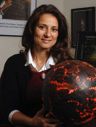

2018 Founders Celebration Honorees
-
 John Laird (Stevenson ’72, politics)
John Laird (Stevenson ’72, politics)
California Secretary for Natural ResourcesA trailblazing public servant
John Laird was appointed California Secretary for Natural Resources by Governor Jerry Brown on Jan. 5, 2011. He has spent over 40 years in public service, including 23 years as an elected official.
The son of teachers , Laird was raised in Vallejo and graduated with honors in politics from UC Santa Cruz in 1972. He then served on the district staff of Representative Jerome Waldie and as a budget analyst for the Santa Cruz County Administrator.
In 1981, Laird was elected to the Santa Cruz City Council, serving nine years until term limits ended his council service in 1990. He was a two-term mayor from 1983 to 1984 and 1987 to 1988. During his local government service, he was a board member for local transit, transportation, water planning, and regional government agencies. Laird was the executive director of the Santa Cruz AIDS Project from 1991 to 1994 and an elected member of the Cabrillo College Board of Trustees from 1994 to 2002.
In 2002, Laird was elected to represent the 27th Assembly District in the California Assembly, which includes portions of Santa Cruz, Monterey, and Santa Clara counties. He was re-elected in 2004 and again in 2006, when he received more than 70 percent of the vote. At the beginning of his second term, Laird joined the Assembly leadership team when Assembly Speaker Fabian Núñez named him chair of the Budget Committee, a position to which he was reappointed by Assembly Speaker Karen Bass in 2008.
While serving the maximum three terms, Laird authored 82 bills that were signed into law. These bills established the landmark Sierra Nevada Conservancy, restored community college health services, expanded and clarified state civil rights protections, reformed the state mandates system, and significantly expanded water conservation.
Laird was a member of the State Integrated Waste Management Board from 2008 to 2009. Most recently, he taught state environmental policy at UC Santa Cruz.
Laird has been a long-time resident of Santa Cruz with his spouse, John Flores. He has traveled extensively, is fluent in Spanish, enjoys conducting family history research, and is a lifelong Chicago Cubs fan.
-
 Lise Getoor
Lise GetoorData visionary
Lise Getoor is a professor in the Computer Science Department at UC Santa Cruz and founding director of the UC Santa Cruz Data, Discovery, and Decisions (D3) Data Science Research Center.
Her research interests include machine learning and reasoning under uncertainty, with a focus on graph and network data. She has made foundational contributions to mathematical models that combine logic and probability; is one of the founders of the field of statistical relational learning, a research sub-area of machine learning; and is coauthor of the canonical text in the area. She has worked extensively in data integration and privacy in network data.
Getoor and her group have developed a popular open-source programming language called probabilistic soft logic (PSL). Using PSL, she and her group have tackled a wide range of data science problems, including the analysis of stance in online debates, understanding and inferring social trust, making sense of political groups in online media, energy disaggregation from coarse-level consumption information, measuring engagement in online learning, recommendation of sustainable products, and studying the effect of severe weather events on human trafficking. She is the principal investigator on a $1.5 million National Science Foundation Transdisciplinary Research in Principles of Data Science (TRIPODS) Phase I grant, which aims to bring together computer scientists, mathematicians, and statisticians to develop the new theoretical foundations for data science. Recently, her work has focused on responsible data science, with the goal of developing socially responsible socio-technical-human-in-the-loop decision-making systems that are fair, accountable, transparent, and safe.
She has over 250 publications, including 12 best-paper awards. She is a Fellow of the Association for the Advancement of Artificial Intelligence (AAAI); has been an elected board member of the International Machine Learning Society; has served on the board of the Computing Research Association and AAAI Council; and has served as Machine Learning Journal action editor, Association for Computing Machinery Transactions of Knowledge Discovery from Data associate editor, and Journal of Artificial Intelligence Research associate editor.
She received her Ph.D. from Stanford University in 2001, her M.S. from UC Berkeley, and her B.S. from UC Santa Barbara, and was a professor in the Computer Science Department at the University of Maryland, College Park, from 2001–2013. She and her partner live in Santa Cruz.
-
Natalie Batalha (Ph.D. ’97, astrophysics)
Astrophysicist and lead scientist on the NASA Kepler MissionLooking for life
Natalie Batalha is an astrophysicist at NASA Ames Research Center and served as the science lead for NASA's Kepler Mission from 2011 to 2017. She holds a bachelor's degree in physics from UC Berkeley and a doctoral degree in astrophysics from UC Santa Cruz.
Batalha started her career as a stellar spectroscopist studying young, sun-like stars. After a post-doctoral fellowship in Rio de Janeiro, Brazil, she returned to California. Inspired by the growing number of exoplanet discoveries, Batalha joined the team led by William Borucki at Ames working on transit photometry—an emerging technology for finding exoplanets. She was involved with the Kepler Mission since the proposal stage and contributed to many different aspects of the science, from studying the stars themselves to detecting and understanding the planets they harbor. She led Kepler's first efforts to generate its high reliability catalogs of planet detections. She also led the analysis that yielded the discovery in 2011 of Kepler-10b—the mission's first confirmation of a rocky planet outside our solar system.
Batalha served 10 years as professor of physics and astronomy in the classrooms of San Jose State University before joining the Astrophysics Branch of the Space Sciences Division of NASA Ames Research Center. In 2011, she was awarded a NASA Public Service Medal for her vision in communicating Kepler science to the public and for outstanding leadership in coordinating the Kepler Science Team. As the science lead for the prime mission, she assumed responsibility for the data and associated measurements that enable the study of planet demographics in the Milky Way. For her work on Kepler, Batalha was awarded the Lecar Prize and the Smithsonian Ingenuity Award for the Physical Sciences. In 2017, Batalha was named to Time magazine's annual list of the "100 most influential people in the world."
In 2015, she joined the leadership team of a new NASA initiative dedicated to the search for evidence of life beyond the solar system. NASA's Nexus for Exoplanet System Science (NExSS) brings teams from multiple disciplines together to understand the diversity of worlds. Kepler has demonstrated that Earth-size planets abound in the galaxy. NExSS contributes to NASA's efforts to understand which are most likely to harbor life. Batalha also serves on the James Webb Space Telescope Users Committee and as a member of the NASA Advisory Council's Astrophysics Subcommittee. In 2013, she participated on the task force to define NASA's 30-year Astrophysics Roadmap—Enduring Quests, Daring Visions: NASA Astrophysics in the Next Three Decades.
Most recently, Batalha has turned her efforts toward the James Webb Space Telescope, bringing the transiting exoplanet community together to decide which targets should be among the first observed with this state-of-the-art facility scheduled to launch in 2021. Through the JWST Early Release Science (ERS) Program, the exoplanet community was awarded 78 hours to observe three giant exoplanets within the first five months of the telescope's operations.

Special Events Office
Email: specialevents@ucsc.edu
Phone: (831) 459-5003